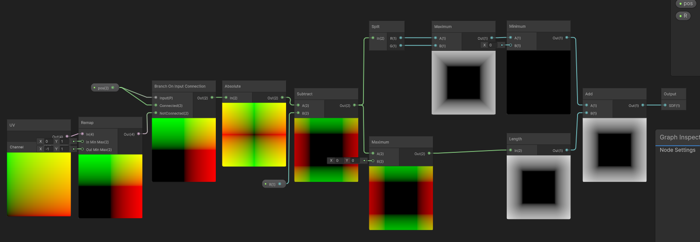
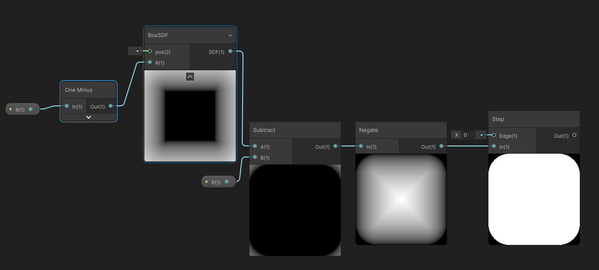
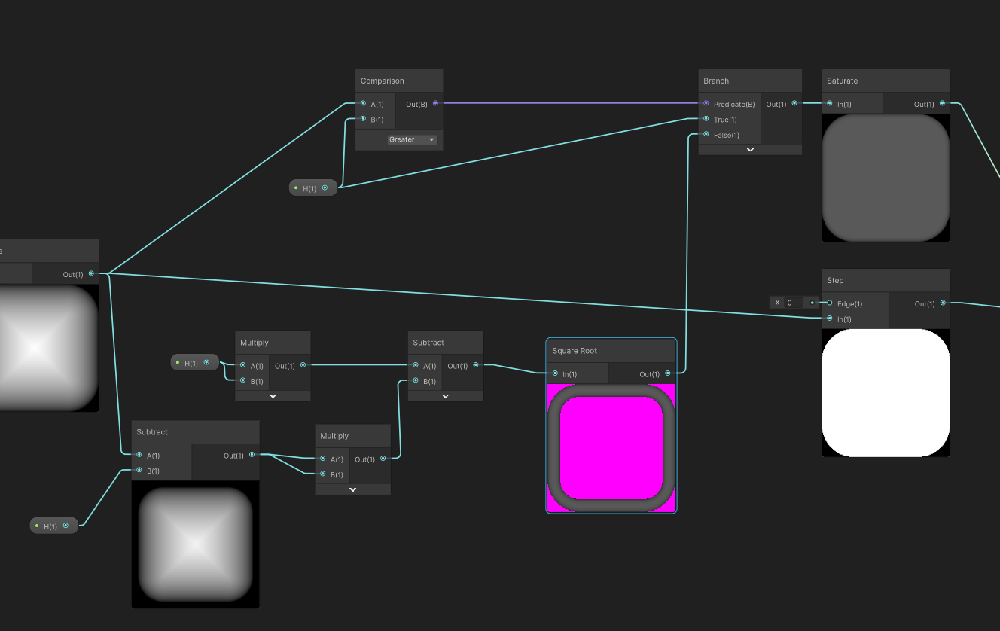
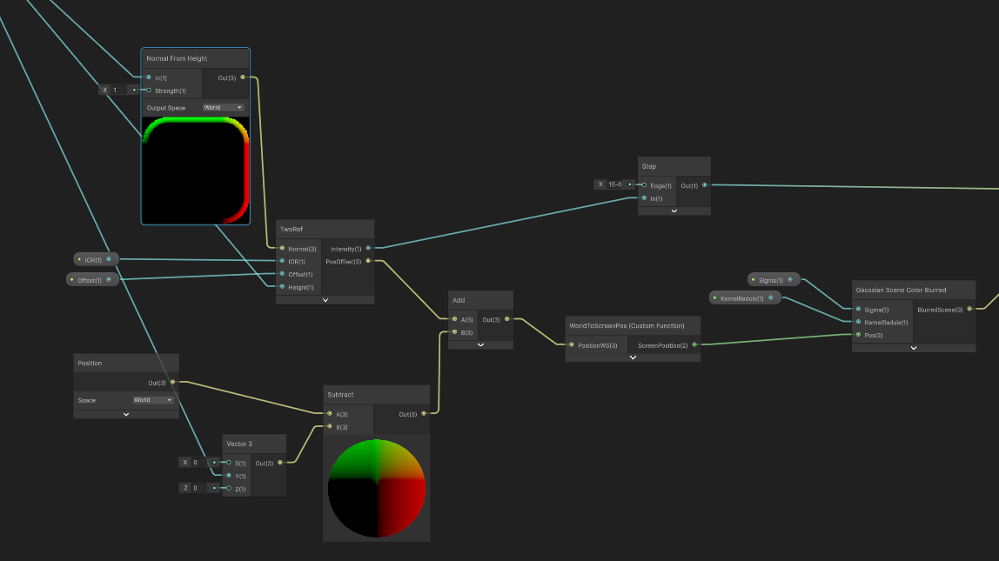
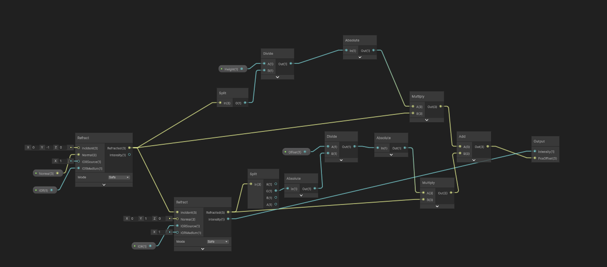
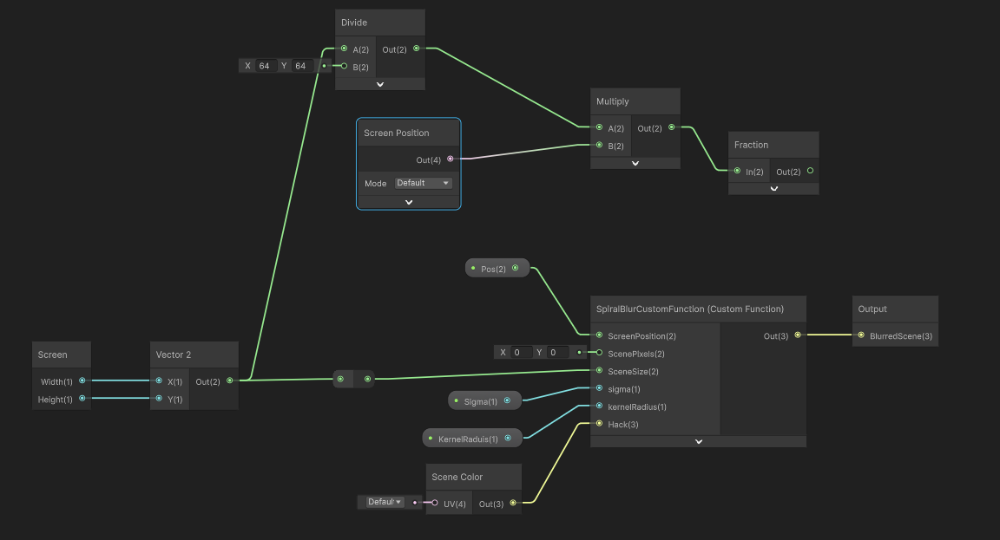
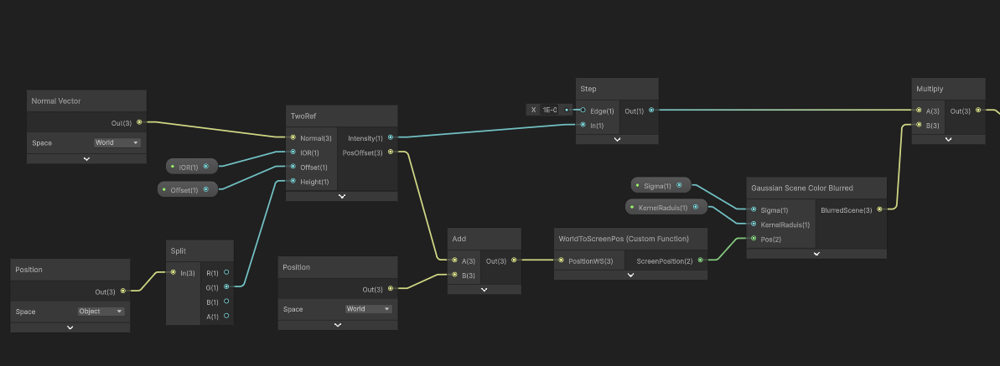
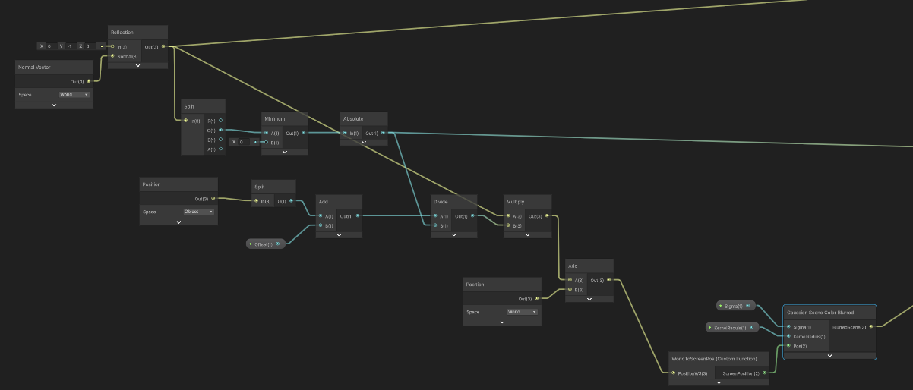
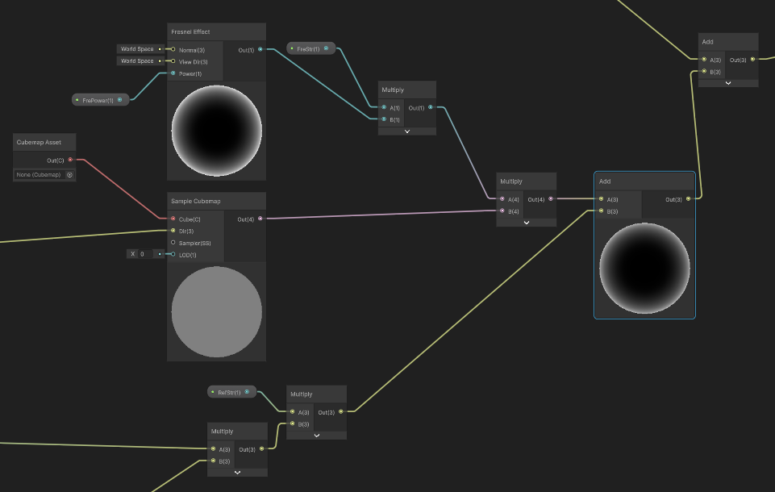
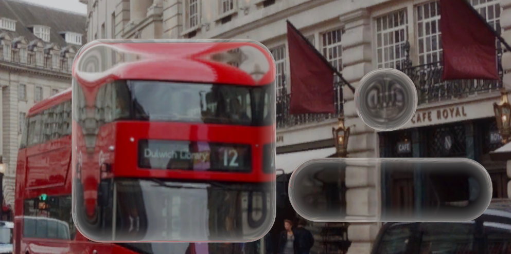

液态玻璃
前述
液体玻璃效果，模仿苹果的液体玻璃效果。
实现思路
主要特点
- 四边圆角
- 透明-高斯模糊
- 反射-最边缘有高光，而且可以反射出按钮周围的环境
- 折射-中心到弯角的部分有弯曲的折射效果
- 液态融合-距离靠近的按钮会融合在一起，形成液态的效果。
这里的折射有两种方式
- 一是算法线，根据折射公式来计算，要算两次，首先是空气到玻璃的折射，然后是玻璃到空气的折射。再结合玻璃不同位置的厚度，玻璃地面到屏幕像素平面的距离即可。
- 二是简单扭曲一下UV坐标，根据sdf，越靠近边缘扭曲程度越大，直接采样屏幕像素。
前者物理上正确，可以与光线追踪的结果对比，像素级精确，后者简单粗暴。
但后者性能更好，而且效果更可控，不会出现发生全反射导致的黑色区域。
# 实现步骤
圆角没啥好说的，用SDF就行，而且后续的液体效果也需要用sdf实现。
然后生成三种遮罩，分别对应三种效果。
接着是要计算法线，还是用sdf当高度，边缘想象成四分之一球体，得出法线。
最外圈的高光，如果要简单一点，就边缘给个亮色就行。复杂的话就就法线采样个cube贴图。
然后是高斯模糊，这也很简单，多采样几次完事。
折射部分也是用法线来计算折射角度，厚度也从SDF中获取，采样屏幕像素即可。
折射要计算两次，首先是空气到玻璃的折射，然后是玻璃到空气的折射。
第一次的折射长度就用玻璃的厚度，第二次就把参数暴露出来方便调整。
两次折射加上原本的位置，转成屏幕空间去模糊采样就行了。
view dir 是朝向相机的！！！！
生成法线
首先box的SDF

然后是圆角的SDF

然后从SDF生成高度

然后是法线，从高度生成法线，再将法线、高度和SDF结合，得到光线的出射位置

这里要考虑两次折射，首先是空气到玻璃的折射，然后是玻璃到空气的折射。

然后是一个非常粗暴的高斯模糊，采样屏幕像素。

float2 UV = ScreenPosition;
float2 texelSize = 1.0 / SceneSize;
float weightSum = 0.0;
float3 result = float3(0, 0, 0);
for (int x = -kernelRadius; x <= kernelRadius; x++) {
for (int y = -kernelRadius; y <= kernelRadius; y++) {
float2 offset = float2(x, y) * texelSize;
// 内联高斯函数：weight = e^(-(x^2 + y^2)/(2*sigma^2))
float dist2 = x * x + y * y;
float weight = exp(-dist2 / (2.0 * sigma * sigma));
float3 sample = SHADERGRAPH_SAMPLE_SCENE_COLOR(UV + offset).xyz;
result += sample * weight;
weightSum += weight;
}
}
Out = result / weightSum;
结果

模型
换一个思路，直接建模，从模型取法线和高度，也可以实现。
首先是折射

然后是反射

再加上边缘高光

完工

液态玻璃
https://www.kuanmi.top/2025/06/11/liquidGlass/